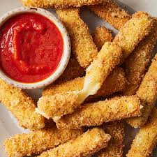

Mozzarella Sticks
This recipe was so good and easy. I added garlic powder to the breadcrumbs and it turned out perfect!.
Cheesy Shell Taco Bites
What a great idea! I was just about to make tacos for lunch and saw this. Since I'm a sucker for cheese, what could be better? Yummy!
Bite Size Sandwiches
These were good! We used turkey and cheddar. Really easy!.